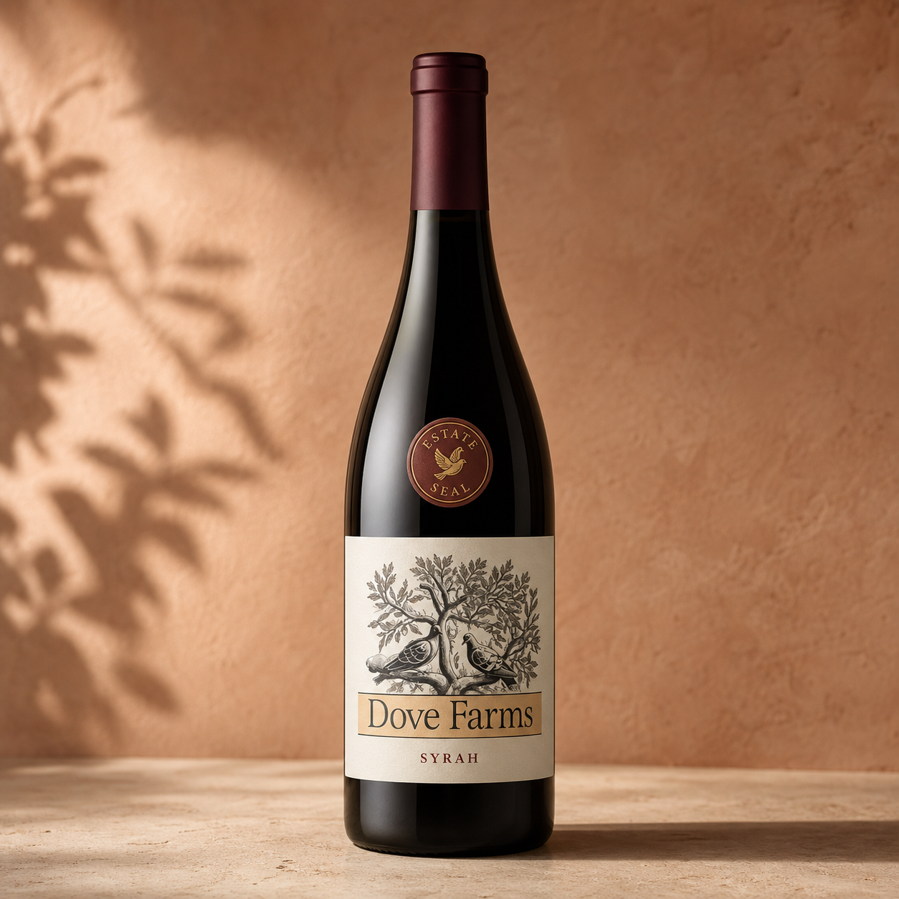

Pairing suggestion
Herb-roasted vegetables, lamb, or rich Mediterranean dishes.
Estate red
Syrah
Powerful berry aromas, subtle spice, and a structured finish suited to slow dinners and Mediterranean dishes.
BlackberryPepperOak
Social media design demonstration
Dove Farms is a fictional winery created for a portfolio project. These interactive icons demonstrate how social links could be styled and presented without suggesting that real business accounts exist.